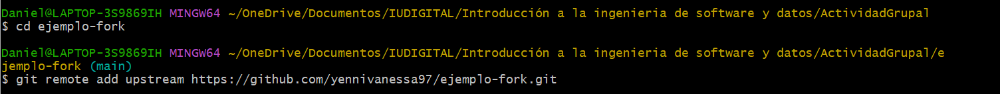

Git Fork
Hacer Fork del Repositorio
Accede al repositorio original
Ve al repositorio en GitHub que deseas contribuir

Haz click en el botón Fork
En la esquina superior derecha de la página del repositorio, haz clic en el botón "Fork". Esto creará una copia del repositorio en tu cuenta de GitHub
Clona tu fork
Ve a tu Fork
Accede a tu cuenta de GitHub y selecciona el fork que acabas de crear.
Clona el repositorio
Haz clic en el botón verde "Code" y copia la URL. Luego, abre tu terminal y ejecuta el siguiente comando: git clone URL
Configura tu repositorio remoto
Agrega el repositorio original como remoto
Navega a la carpeta de tu repositorio: cd "nombre-carpeta"
Esto te permitirá obtener actualizaciones del repositorio original, ejecuta el siguiente comando: git remote add upstream URL_DEL_REPOSITORIO_ORIGINAL
Pare revisar el estado de tus repositorios, usa el comando: git remote -v
Crea una nueva rama
Una buena practica es trabajar e una rama independiente para no afectar la principal, hasta que la mejora este completada, para crearla usa el siguiente comando: git checkout -b nombre-rama
Realiza tus cambios
Ahora puedes realizar cambios en tus archivos, y Git rastreará esos cambios en la rama nueva-funcionalidad. Una vez que termines, puedes agregar los archivos y hacer un commit:git add y git commit -m "Agregué nueva funcionalidad", usa git status para verificarque el "commit" está correcto
Sincroniza tu Fork
Obten cambios del repositorio original
<<<<<<< HEADUsa los comandos: git checkout main, git fetch upstream y git merge upstream/main
=======Usa los comandos: git checkout main, git fetch upstream y git fetch upstream/main
>>>>>>> cf31b41 (Cree el readme, cree la entrada GitFork, añadí al footer y al Script un códigp para que el año se actulice automaticamente, agregue las imagenes relacionadas al fork)Pega la nueva rama en la principal
Usa los comandos: git checkout nombre-rama y git rebase main
Carga tus cambios
Usa el comando: git push origin nombre-rama

Crea un Pull Request
Ve a tu fok en GitHub
Haz clic en "Compare & Pull Request"
Rellena el formulario
Haz clic en "Create Pull Request"
Convenciones comunes
Ramas de Características (Feature Branches):
Formato: feature/nombre-descriptivo
Ejemplo: feature/agregar-autenticacion
Ramas de Corrección de Errores (Bugfix Branches):
Formato: bugfix/nombre-descriptivo
bugfix/corregir-error-login
Ramas de Mejoras (Improvement Branches):
Formato: improvement/nombre-descriptivo
Ejemplo: improvement/optimizar-carga-paginas
Ramas de Refactorización (Refactor Branches):
Formato: refactor/nombre-descriptivo
Ejemplo: refactor/renombrar-funciones
Ramas de Documentación (Documentation Branches):
Formato: docs/nombre-descriptivo
Ejemplo: docs/actualizar-readme
Ramas de Pruebas (Testing Branches):
Formato: test/nombre-descriptivo
Ejemplo: test/agregar-pruebas-automáticas